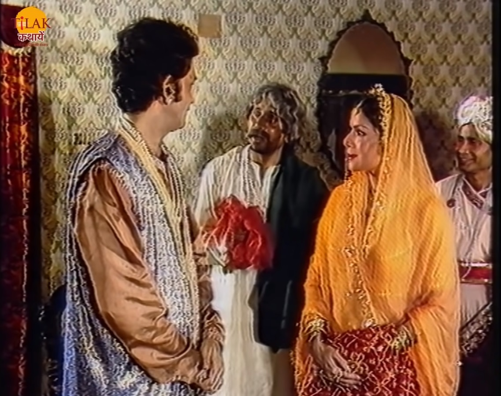
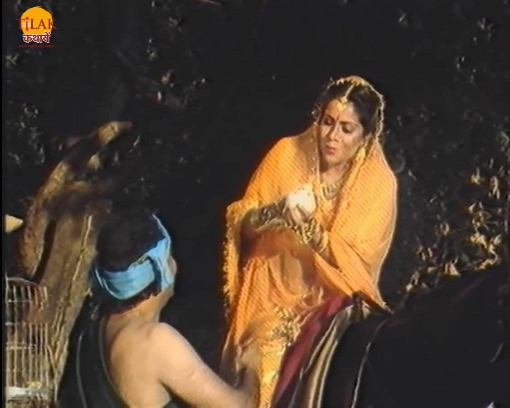
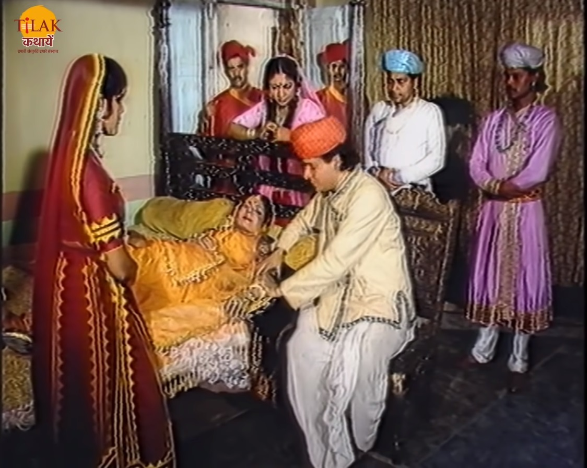
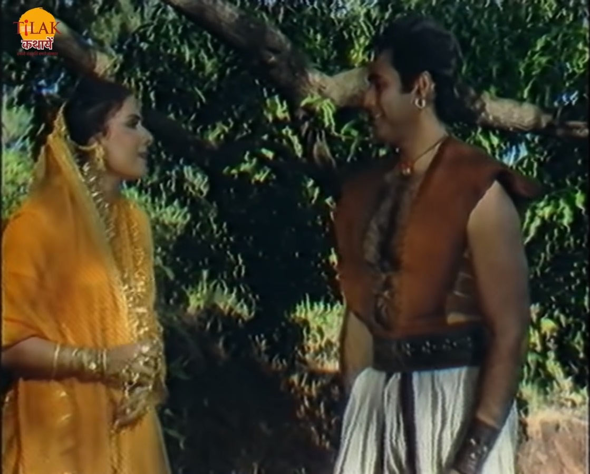
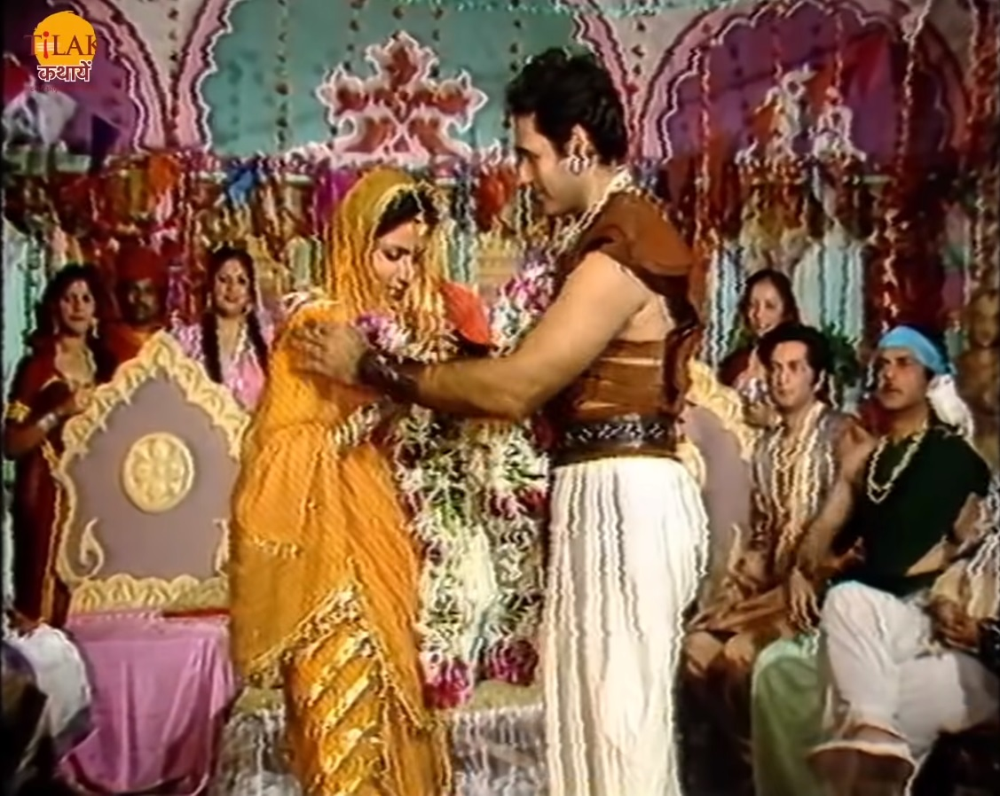

विक्रम और बेताल भाग 11 - राजकुमारी अनंगरती का स्वयंवर

राजा विक्रम फिर से बेताल को पकड़ने के लिए आता है और उसे पकड़ कर ले चलता है तो बेताल विक्रम को फिर से एक
कहानी सुनता है। उज्जैनि राज्य के राजा वीरदेव की एक बेटी थी अनंगरती। राजकुमारी राज्य में घूमने निकल जाती
थी और बहुत दिनों बाद वापस लौटा करती थी। राजकुमारी अनंगरती राज्य में एक कपड़े के व्यापारी से मिलती है जो
उसे एक साड़ी भेंट करता है जिसे देख राजकुमारी प्रसन्न हो जाती है और उसके साथ उसके घर और साड़ी देखने जाती
हैं। उस व्यापारी की कपड़े बनाने की कला को देख कर राजकुमारी बहुत खुश होती है और उस से कहती है की वो भी यह
कार्य सीखना चाहती है और जल्द ही वह उसके पास यह काम सीखनी आएगी।
राजकुमारी आगे बढ़ती है तो रस्ते में उसे एक जंगल में रहने वाला लड़का मिलता है जिसे पक्षियों से बात करना
आता था तो राजकुमारी उसे भी कहती हैं की वो भी पक्षियों की भाषा सीखना चाहती हैं तो वह लड़का उन्हें कहता है
की वो उन्हें अवश्य सिखा देगा लेकिन इसमें बहुत समय लगेगा और वह जंगल को छोड़ कर नहीं जा सकता तो राजकुमारी
अनंगरती उसे कहती है की वह समय निकल कर उससे यह भाषा सीखने अवश्य आएगी।

.

राजकुमारी अपने सेवकों और सहेलियों के साथ आगे बढ़ती है। राजकुमारी को तेज बुख़ार हो जाता है तो राजकुमारी
के सेवक उन्हें एक वैद्य के पास ले जाते हैं। वैद्य उन्हें दवा दे देता है। राजकुमारी दवा लेने के कुछ समय
बाद ठीक हो जाती है तो वह वैद्य के घर में और भी लोगों को देखती है जिनका उपचार वैद्य कर रहे थे। राजकुमारी
वैद्य की दया भावना देख कर उनसे कहती है की वो भी यह सब करना चाहती है दूसरों की सेवा करने का सौभाग्य उसे
भी पाना है तो वह वैद्य से कहती है की वह वहाँ ज़रूर आएगी और बीमार लोगों की वैद्य के साथ सेवा करेगी।
राजकुमारी वहाँ से चल पड़ती है और जंगल में जब राजकुमारी पैदल घूम रही थी तो वो एक शिकारी के फंदे में फँस
जाती है। एक वीर आदमी वहाँ आता है और राजकुमारी को फंदे में फँसा देखता है तो वो उन्हें फंदे से छुड़ा लेता
है और उन्हें सुरक्षित नीचे उतार देता है। राजकुमारी उस वीर आदमी से मिल्कर बहुत खुश होती है और अपनी जान
बचाने के लिए उसे धनयवाद करती है। राजकुमारी वापस अपने राजमहल लौट जाती है। राजकुमारी के आने पर राजा वीरदेव
और उसकी माता पद्मवती खुश होते हैं और उसे बताते हैं की उसके लिए पड़ोस के बहुत से राजकुमारों के रिश्ते आए
हैं।

राजकुमारी अनंगरती राजा से कहती है की वो किसी राजा या राजकुमार से शादी नहीं करना चाहती वह अपने राज्य के किसी आम
आदमी से विवाह करना पसंद करेगी। राजा अपनी बेटी की बात सुनकर उसका स्वयंवर रख देता है। राज्य में राजकुमारी के
स्वयंवर की खबर सुनाई जाती है। राजकुमारी के स्वयंवर के बारे में सुनकर वो चारों व्यापारी, बहेलिया, वैद्य और रनी की
रक्षा करने वाला लड़का भी स्वयंवर में भाग लेने जाते हैं। स्वयंवर के दिन सभी वहाँ आ जाते हैं अब राजकुमारी को उन
सभी में से एक का चुनाव करना था।

अब बेताल राजा विक्रम से पूछता है की राजकुमारी किसे अपना वर चुनेगी ये बता तो राजा
विक्रम बेताल को बताता है की राजकुमारी अपने लिए उस बहादुर आदमी को चुनेगी जो वीर है और वही उनके राज्य और उसकी
रक्षा कर सकता है। राजकुमारी के पास धन दौलत की कमी नहीं थी इसलिए वो उस व्यापारी से शादी नहीं करेगी और ना ही वो
वैद्य से करेगी क्योंकि उसे वो काम अच्छा लगता है लेकिन उस कार्य को करने के लिए उसे वैद्य से शादी नहीं करनी पड़ेगी
और बहेलिया के पास एक प्रतिभा है जो सिर्फ़ एक गुण हैं लेक्किं वो राज्य की रक्षा नहीं कर पाएगा इसलिए राजकुमारी
अपने लिय उस वीर आदमी को अपना वर चुनेगी। राजा विक्रम का उत्तर सुनकर बेताल फिर से उड़ जाता है और वापस पेड़ पर जकार
लटक जाता है।